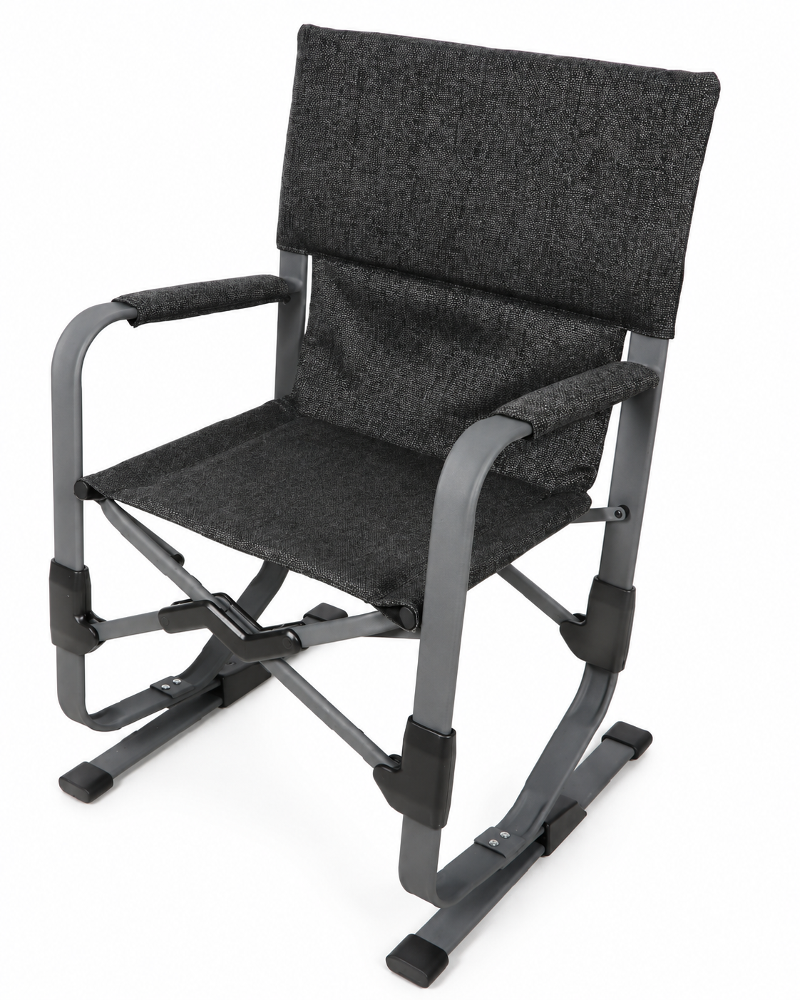
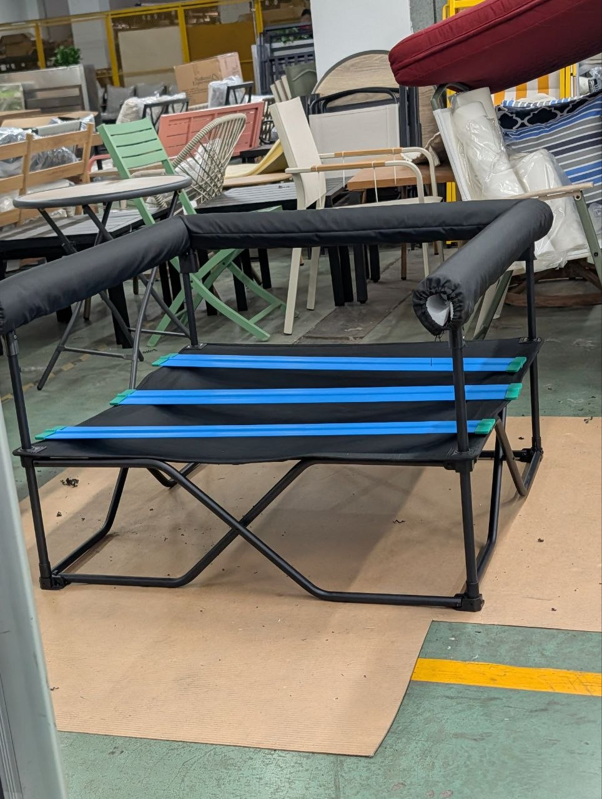
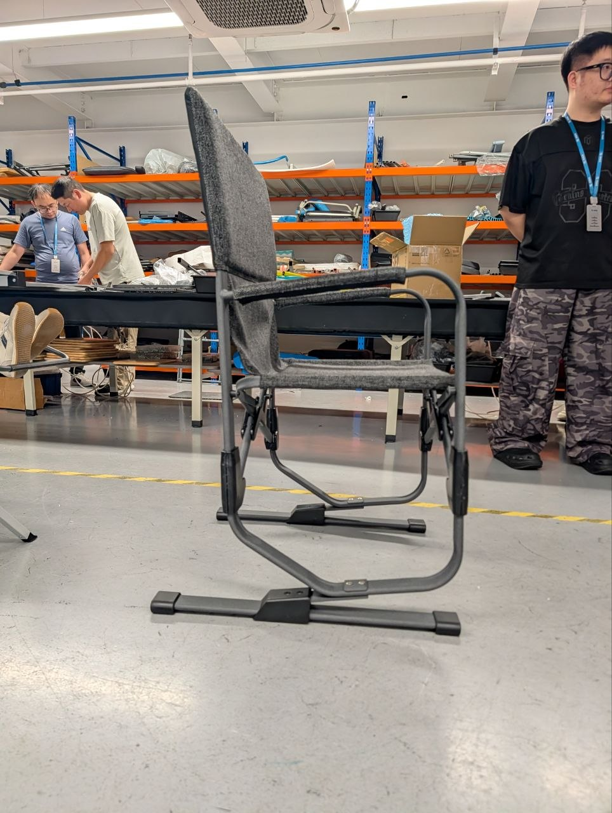
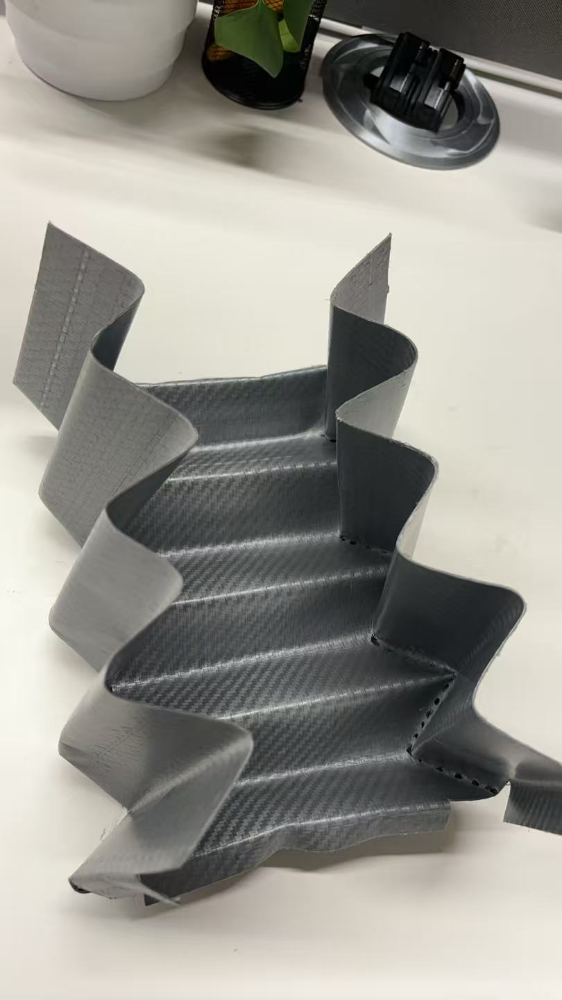
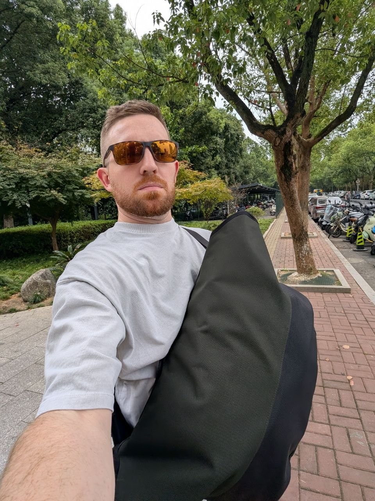
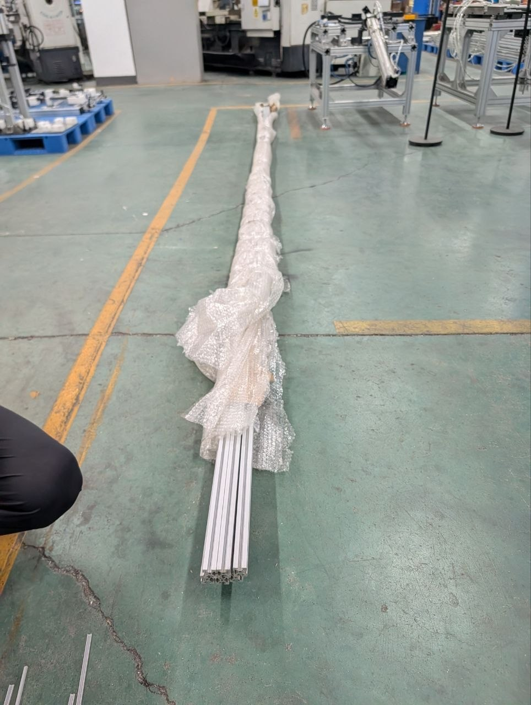

Industrial Design · October 2026
October
development
recap.
Product progress, decisions and continuity between visits.

Industrial Design · October 2026
Product progress, decisions and continuity between visits.

Follow-through · September → October
| Workstream | September commitment | October position |
|---|---|---|
| Instant Indoor | Complete the next build. | Slat capture agreed; revised cover and parts expected 24–25 October. |
| Flow V2 | Rebuild to the approved design. | Sample delivered. Review refinements and reduce weight with aluminum. |
| Tactical Messenger | Revise and repeat use testing. | October revision brief defined; next sample timing to confirm. |
| Local design support | Move forward with Isaac. | Agree the start date, work allocation and follow-through responsibilities. |
| Indiana prototype kit | Complete, pack and ship. | Supplier cost/packing information available; close freight and dispatch details. |
01 · Instant Indoor

Threaded inserts in the existing plastic parts provide a practical attachment route.
An additional fabric enclosure keeps the Goodside slats secure through assembly, shipping and storage.
Delivery expected 24–25 October, followed by an integrated sample review.
02 · Flow Motion V2

The new Flow V2 sample is delivered and looks great.
Capture the minor revisions expected after the 25 October meeting.
Reduce weight while carrying the reviewed design into the next build.
03 · Origami Wagon

Full-size sample work established the folding motion and compact-storage potential.
Uneven loads can invert panels or ridges; the load-bearing structure needs further development.
Try stiffer panels, then mechanical reinforcement if needed—without losing the fold.
04 · Tactical Messenger

September’s maker-and-designer loop produced useful revisions and real-use feedback.
The October brief updates closure, access, dimensions, lining and hardware.
Finish the revised patterns and build, then repeat loaded comfort and access testing.
05 · Tent development
Develop the captive-pole mechanism into a practical, easy-to-use shelter.
My team develops CAD forms and physical prints to compare silhouette, entry, headroom and usable space.

Use the daypack study method.
Compare tangible forms, shortlist directions and bring the learning back to the tent team.
Local design continuity
Local industrial design support
Isaac
Carry the design intent from CAD through sample revisions.
Next: confirm the start date and WF/HF work allocation.
Westfield · Indiana prototype capability

US$4,160.12
Supplier goods + high-duty/fee estimate.
Before freight and other unlisted charges.
Confirm kit completeness, manufacturing/duty assumptions, freight and the shipment approval path.
RÖR · Color, material & finish
3 shared mold-texture options for a consistent family language.
James and I selected the materials for comparison. The next step is to compare them in renders and review the physical set with Bryan.
Motion-chair strategy
| Project | Motion experience | Development question / next step |
|---|---|---|
| Flow V2 | Leaf-spring rocking | Refine the delivered sample; reduce weight. |
| Hawkeye V3 | Spring-limb motion | Define the user and product role before major new investment. |
| FlexBoard | Composite-limb rocking | Resolve testing, surface, noise and design questions. |
| Gimbal | Adaptive seat movement | Assess the sample and establish a distinct use case. |
| Suspend | Suspended bounce and sway | Tune the suspension in an adjustable rig; parked work. |
| MechTech | Four-bar rocking | Resolve the engineering next step; currently blocked. |
Compare: customer and use · comfort benefit · weight and packed size · cost · technical risk.
Across the team
James and I worked with Nicole and Fiona at the factory, contributing construction and design feedback where it helped.
James led the meeting, I contributed feedback, and Dr. Yu presented.
Clarify the technical work and inputs, while keeping technical responsibility distinct from account and project coordination.
Follow-through: capture any resulting actions and keep them attached to the responsible project or team.
Development focus
| Project | Next tangible result | |
|---|---|---|
| 01 | Instant Indoor | Review the revised cover and parts as one integrated sample. |
| 02 | Flow V2 | Capture small revisions and develop the lighter aluminum build. |
| 03 | Origami Wagon | Prove useful load capacity while retaining the fold. |
| 04 | Tactical Messenger | Complete the revised sample and repeat loaded-use testing. |
| 05 | One Pull Tent | Prove the mechanism in Hangzhou; run ID form exploration in parallel. |
Sequence support around clear next results, rather than promise five finished products at once.
Hengfeng · Two support requests
Next steps · People, results and review dates
| Workstream | Next result / decision | Owner + review date |
|---|---|---|
| Instant Indoor | Integrated sample review and remaining corrections. | Agree today |
| Flow V2 | Post-review changes, weight target and aluminum build. | Agree today |
| Origami Wagon | Stiffening variants and physical load retest. | Agree today |
| Tactical Messenger | Pattern completion, revised sample and use test. | Agree today |
| One Pull + ID forms | First Hangzhou trial and shared form-study review. | Agree today |
| Team + capacity | Named counterparts, prototype slots and review rhythm. | Agree today |
| Indiana kit | Complete freight/readiness package and shipment decision. | Agree today |